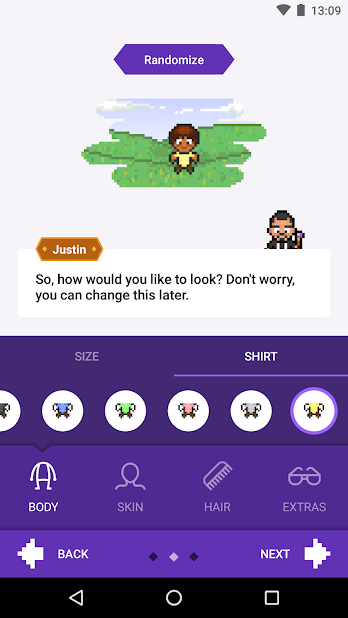

Design and implement an instant task-clearing feature in a task-gamifying mobile application.
Problem Statement
Overview & Background
Students' lives are hectic and difficult to manage at times. It is, therefore, important for students to keep track of their lives with a checklists and reminder system. How do we combine list-checking with fun and convenience in a package?
Solution
As part of our CS3240 Interaction Design project, we chose to design a mobile platform to gamify tasks for NUS students.
Gamifying tasks offers not only a solution but also a fun and interactive method to deal with stress.
Competitive Benchmark
Analyzing current task-gamifying applications
The idea behind gamifying tasks has been around for quite some time. It is, therefore, neccessary to understand the design of similar competitors. "Habitica" stands out immediately after a quick google play search.
Habitica: Gamify Your Tasks

Different types of tasks include: habits, daily and to-dos
Plus and minus buttons to add and subtract tasks accordingly
Attractive quests to motivate users to complete tasks
List of tasks and rewards for full display of information
Notification when gaining a level as a from of feedback
Social features like party is included to increase user base

An user feed to share and post contents and messages

Rich character customizations makes users more engaged
Survey Analysis
The main user group for this project is the student body of National University of Singapore (NUS), and therefore we structure our design based on the curriculumn of NUS. To get user input, we created a survey and gathered 16 resonses along with some valueable insights:
- More than half have difficulties keeping tracks of homeworks & assignments: 56.3% of students indicated > 7 on the scale of 0-10 with 10 being the most difficulties.
- There are two many assignments to keep track of: Out of 16 resonses, "too many assignments" is the most common problem faced by students.
- There is no one-stop solution for this problem: Students use a variety of tools like making their own post-it or Google Keep
- Gamifying tasks is fun: An overwhelming 75% of students expressed their supports for such application and think that it would motivate them.
After going through user-input and consulting with our professor, each of us carry on with different aspects of the project. For my part especially, I focus on the instant task-clearing feature. I figure that this feature is useful since most students would like to clear a currently queued task only with one action.

reflection
This project is my first step into the interactive design field. Along with the project, CS3240 also taought me various design principles and heuristics evaluation criteria to assess whether a design is intuitive and user-friendly. I also liked the process behind drawing user flow and creating prototypes using Balsamiq. Overall, CS3240 was a great module and this was a great project :).
Tools used
- Balsamiq
Other works
Xilinx PHP Interface
My first internship as an undergrad student was at Xilinx Asia Pacific Pte Ltd. During which, I had a chance to learn CSS to design my first website.
Winter 2017

Continental Confluence Dashboard
I designed an admin dashboard out of my own initiative as a tools for upper management to keep track of Confluence usage within Continental Automotive Singapore Pte Ltd.
Summer 2018